8 Chapter 8: Minding the gap between science and statistics
These notes cover some general problems that come up in applied data analysis. Many are issues that have come to light recently.
8.1 The “replication crisis”
“The replication crisis” refers to a recent realization in many areas of science that previously published results often fail to replicate.
Arguably, this started with Daryl Bem’s 2011 paper “Feeling the Future”, published in the Journal of Personality and Social Psychology.
This paper used standard statistical tools to show strong evidence for pre-cognition, a.k.a. ESP. Many scientists were bothered by this, because they did not believe in ESP but they did believe in the statistical methods used in this paper!
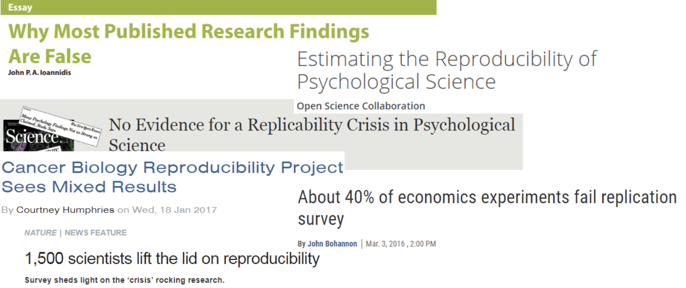
2015’s “Reproducibility Project: Psychology” by the Center for Open Science found that a large number of published experimental results in top Psychology journals failed to replicate.
Similar studies in Cancer Biology, Medicine, Economics, Marketing, and Sports Science have found high rates of non-replication.
Why do so many studies fail to replicate? There are many reasons, and statistical analysis plays a prominent role. These notes cover the role of statistics in the replication crisis.
8.1.0.1 Power
Many of the statistical issues surrounding the replication crisis concern “power”.
Statistical power is the probability of rejecting a null hypothesis (\(H_0\)), in the case that \(H_0\) is false.
In terms of real-world effects, if power is high, then there is a good chance of “detecting” an effect – i.e. of declaring statistical significance.
If power is low, then even if a real-world effect exists, the result of a hypothesis test will likely be “fail to reject” \(H_0\); i.e. non-significance.
8.1.0.2 Type I and Type II errors
A “Type I” error occurs when a true \(H_0\) is rejected. In other words, if we declare a result “statistically significant” even though no real-world effect exists, we are committing a Type I error. This is sometimes called a “false positive” outcome.
A “Type II” error occurs when a false \(H_0\) is not rejected. In other words, if we declare a result “not significant” even though a real-world effect does exist, we are committing a Type II error. This is sometimes called a “false negative” outcome.
Low statistical power implies a high chance of a false negative.
8.1.0.3 Problem: power is unknown!
The “true” power of a statistical test is almost never known. To calculate power, one must assume the “true” size of the effect being studied.
For instance, power to reject the null hypothesis that a new drug is equally effective as a previous drug depends in part upon how different the two drugs are in effectiveness. But if we knew that, we wouldn’t need to conduct a study!
There has been research estimating average statistical power in various research fields, and reason to believe that low power studies are not uncommon. Which means that a lot of these replication failures might be “false negatives”, rather than the original studies being “false positives”.
8.1.0.4 Some history on “NHST”
The form of hypothesis testing used today is sometimes called Null Hypothesis Significance Testing (NHST). It combines what used to be two different methods created by two “camps”. The camps disagreed with one another, and did not get along personally.
Ronald Fisher
Jerzy Neyman and Egon Pearson
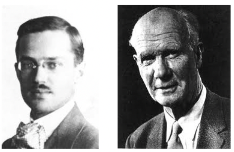
8.1.0.5 Ronald Fisher
Introduced the null hypothesis and p-value
On interpreting small p-values: “Either an exceptionally rare chance has occurred, or the theory of random distribution is not true”
On the use of p < 0.05 as a standard of evidence: “In order to assert that a natural phenomenon is experimentally demonstrable we need, not an isolated record, but a reliable method of procedure. In relation to the test of significance, we may say that a phenomenon is experimentally demonstrable when we know how to conduct an experiment which will rarely fail to give us a statistically significant result”
8.1.0.6 Neyman and Pearson
Introduced the alternative hypothesis, Type I and II errors, and power.
Reported only Type I and Type II error probabilities in testing; e.g. p-values of 0.001 and 0.04 would both be reported as falling under a pre-specified \(\alpha = 0.05\) Type I error rate. A Type II error rate should also be reported.
“We are inclined to think that as far as a particular hypothesis is concerned, no test based upon a theory of probability can by itself provide any valuable evidence of the truth or falsehood of a hypothesis”
8.1.0.7 NHST
NHST is a mix between the two approaches.
Hypothesis testing comes from Neyman and Pearson. They did not believe p-values should be interpreted directly as quantifying evidence. They saw their procedure as simply a method for making a decision.
The direct interpretation of p-values as quantifying the probability of obtaining results at least as extreme, assuming the null hypothesis is true, comes from Fisher. He did not use an alternative hypothesis, and he did not accept formal power analysis.
8.1.0.8 When “p < 0.05” isn’t that meaningful
We say results are “statistically significant” when we calculate a p-value less than the \(\alpha\) level of significance, which is commonly 0.05.
So, “significant” results are the kind that would be unlikely to occur by chance, if the null hypothesis were true.
There are some issues here…
The reason small p-values are considered “evidence” for a research hypothesis is that they are supposed to be unlikely to occur by chance alone.
If there is flexibility in how to conduct an analysis, then it becomes more likely that small p-values will occur by chance.
This has a derogatory name: “P-hacking”.
Less derogatory alternatives: “Researcher degrees of freedom”, “The garden of forking paths”
- Examples of flexibility:
- Trying out different combinations of independent and dependent variables
- Trying out different models and testing methods
- Redefining variables (e.g. averaging over different combinations of survey responses, choosing different cut points for placing responses into categories)
- Discarding / retaining outliers
- Transforming variables
- Collecting more data than originally planned
- Ceasing data collection earlier than originally planned8.1.0.9 Capitalizing upon flexibility, so that \(P(p < 0.05) > 0.05\)
Flexible practices are perfectly justifiable in many contexts
But – to interpret a p-value as “the probability of obtaining results at least this extreme, assuming the null is true”, there can be no flexibility, unless accounted for using a correction (e.g. Bonferroni). Flexibility renders the classical p-value interpretation invalid.
Another way of putting it: if you report a p-value as “the probability of obtaining results this extreme, assuming the null is true”, you are implicitly claiming you would have conducted the identical analysis, even if the data had been different in any way.
8.1.0.10 The null could be false due to something you haven’t thought of
Perhaps “\(H_0\) is false” does not imply that the version of “not \(H_0\)” you have in mind is true.
In observational studies, we must always think about possible confounders. Maybe there is a “significant association” between variables for some reason that isn’t being considered.
In experimental studies, we must consider all the possible effects of our interventions. Did the experiment produce “significant” results for a reason we didn’t consider, e.g. poor control, biased question wording?
Example: CSU has found that students who complete their Math and Composition AUCC requirements during their first year earn higher grades and have higher graduation rates than those who do not.
Does this suggest that completing these requirements in the first year results in higher grades and a higher chance of graduation?
Could this “statistically significant” effect be due to confounding factors? Is it even reasonable to suspect that students who complete these classes during their first year should have identical grades and graduation rates as those who don’t? This is what the rejected \(H_0\) states. Are we impressed that it is rejected?
8.1.0.11 Do we even think the null could be true?
“All we know about the world teaches us that the effects of A and B are always different – in some decimal place – for any A and B. Thus asking ‘Are the effects different?’ is foolish” - John Tukey
The null can be used as a “Straw Man” that no one really believes. Overturning a straw man null may not be that impressive.
A good question to ask: “would we expect this null to be true?”
If we are performing an experiment, the null is that the treatment does literally nothing. Is this common?
If we are analyzing observational data and testing for “significant correlation”, the null is that there is precisely zero correlation at the population level. Do we think this is possible?
Psychology/Philosopher/Statistician Paul Meehl called this the “crud factor”: the extent to which everything is correlated with everything, at least at some small level.
But, there are times when the null is plausible.
In manufacturing quality control analysis, the null is that “everything is being produced the normal way”. Defects show up as large deviations from this observed null distribution.
In Ronald Fisher’s “The Lady Tasting Tea”, the subject of the story claimed she could tell whether milk or tea had been poured into a cup first, simply by tasting the result. The null is that she couldn’t tell. Seems plausible.
My personal rule is that I am only interested in p-values when I think the null is plausible.
8.1.0.12 Is there a decision to be made?
A significance test returns a binary outcome: the results are significant, or they are non-significant.
Binary outcomes can produce binary thinking: the temptation to think “significant” means “real” and “non-significant” means “due to chance”.
Is coming to a binary choice even necessary? Why not just report a point estimate and standard error or 95% CI?
If there is an actionable outcome, a binary choice might be necessary.
Example: deciding whether to continue investing money into a research program.
If the analysis is being done for the purpose of decision making, then a decision rule must be established, and “significance” can be such a rule. If the analysis is being done for the purpose of conveying information in data, I personally see no reason to add in a declaration of “significant” or “not significant”.
8.1.0.13 Big sample sizes give small p-values
Consider the t-test statistic:
\[ t = \frac{\bar{x}_1 - \bar{x}_2}{\textit{std. error of }\bar{x}_1 - \bar{x}_2} \]
As sample size increases, standard error decreases, the t-test statistic increases, and the p-value decreases.
So, the bigger the sample size, the smaller the value of \(\bar{x}_1 - \bar{x}_2\) that is needed to achieve statistical significance.
Upshot: if \(n\) is larger, very small effects will be “significant”.
8.1.0.14 eBay study example
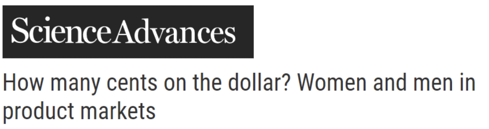
“Women had a slightly higher percentage of transactions for which positive feedback had been given in the year preceding the current transaction (99.60% for women and 99.58% for men, P < 0.05)”
(http://advances.sciencemag.org/content/2/2/e1500599.full)
8.1.0.15 What kind of Type I error are you referring to?
Going back to Type I errors, here is the “Type I error rate”:
\[ P(\textit{Reject } H_0|H_0\textit{ is true}) \]
What if we’re actually interested in the reverse?
\[ P(H_0\textit{ is true}|\textit{Reject } H_0) \]
Classical hypothesis testing controls the probability of rejecting \(H_0\), given \(H_0\) is false, typically at 5%.
It says nothing about the probability \(H_0\) is false, given that \(H_0\) has been rejected. \(P(\textit{reject } H_0|H_0\textit{ is false}) \neq P(H_0\textit{ is false}|\textit{reject } H_0)\)
Upshot: don’t imagine that a Type I error rate of 0.05 implies that only 5% of significant results you see should be Type I errors!
8.1.0.16 What do people think small p-values mean?
Jacob Cohen:
What’s wrong with NHST? Well, among many other things, it does not tell us what we want to know, and we so much want to know what we want to know that, out of desperation, we nevertheless believe that it does! What we want to know is “Given these data, what is the probability that \(H_0\) is true?” But as most of us know, what it tells us is “Given that \(H_0\) is true, what is the probability of these (or more extreme) data?“ - The Earth is Round (p<0.05) (1994)
“Statistical tests, P values, confidence intervals, and power: a guide to misinterpretations” (2016) lists a large number of popular misinterpretations. Some highlights…
“The p-value is the probability that the test hypothesis is true; for example, if a test of the null hypothesis gave P = 0.01, the null hypothesis has only a 1 % chance of being true; if instead it gave P = 0.40, the null hypothesis has a 40 % chance of being true.”
“The p-value for the null hypothesis is the probability that chance alone produced the observed association”
“A null-hypothesis p-value greater than 0.05 means that no effect was observed, or that absence of an effect was shown or demonstrated.”
“Statistical significance is a property of the phenomenon being studied, and thus statistical tests detect significance.”
“When the same hypothesis is tested in two different populations and the resulting p-values are on opposite sides of 0.05, the results are conflicting.”
(note: all of these are wrong)
8.1.1 Assessing bias using meta-analysis
8.1.1.1 The sampling distribution of the p-value
It is intuitive to think that larger p-values are more likely to occur than smaller p-values when the null is true.
This is intuitive, but it is false. In most testing scenarios, all p-values are equally likely when the null is true. The distribution of p under \(H_0\) is uniform:
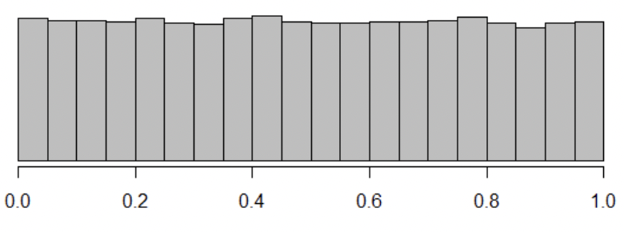
Simulation: https://csu-statistics.shinyapps.io/visualize_power/
When the null is false, the distribution of p is right skewed. The greater the statistical power, the greater the skew.
Here is the distribution of p for Cohen’s d = 0.5 and n = 30, implying power \(\approx\) 75%
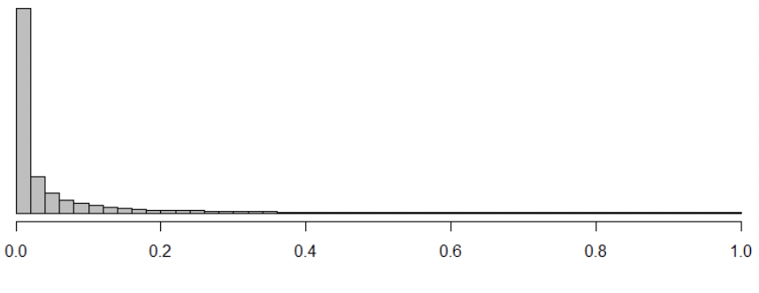
When null is false, smaller p-values are more likely than larger ones.
Some people have the intuition that for weaker effects or lower power, significant p-values should be close to 0.05.
This is false; even for low power, very small p-values are more likely than “marginally significant” p-values. Here is the distribution of p for Cohen’s d = 0.2 and n = 30, impying power \(\approx\) 19%
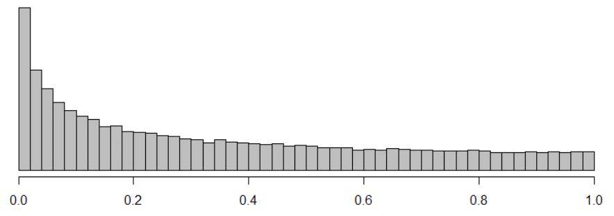
Upshot: we should never see lots of p-values just below 0.05, even under low power.
But – there are papers in which many studies are performed, all of which produce p-values just below 0.05. There are bodies of published research in which p- values just below 0.05 occur too frequently.
This suggests some combination of “publication bias” and “p-hacking”
Formal test: “P-curve” (www.p-curve.com)
“P-curve” takes a collection of p-values less than 0.05 and compares them to the uniform distribution expected under \(H_0\)
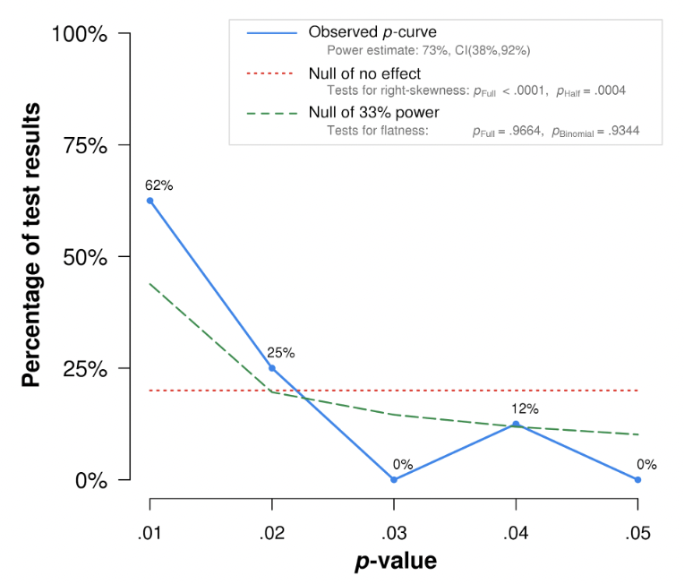
If p-values close to 0.05 occur too frequently, the p-curve is consistent with a true \(H_0\), despite all p-values being less than 0.05.
8.1.1.2 What N is required for sufficient power to detect obvious effects?
Simmons, Simonsohn, and Leif conducted an Amazon M-Turk study (n = 697) to estimate required sample size to detect a variety of “effects” at \(\alpha = 0.05\). Examples:
Men are taller than women (n = 12; i.e. n = 6 per group) People who like spicy food eat more Indian food than people who don’t like spicy food (n = 52)
People who like eggs eat more egg salad than people who don’t like eggs (n = 96)
Smokers think smoking is less likely to kill someone than do non-smokers (n = 288)
Men weigh more than women (n = 92) (!!!!!!!!!!!)
8.1.1.3 More on publication bias
“Publication bias” is the phenomenon by which statistically significant results are more likely to be published in a journal than results that are not statistically significant.
There are many tools for trying to diagnose this (including P-curve)
Test of Insufficient Variance: convert p-values to z-statistics. Expected variance of z-statistics is 1. Variance less than 1 could suggest “missing” studies.
8.1.1.4 Funnel plot
Plot effect size vs. standard error. Variance in effect sizes should decrease as standard error decreases, but effect size and standard error should not be correlated.
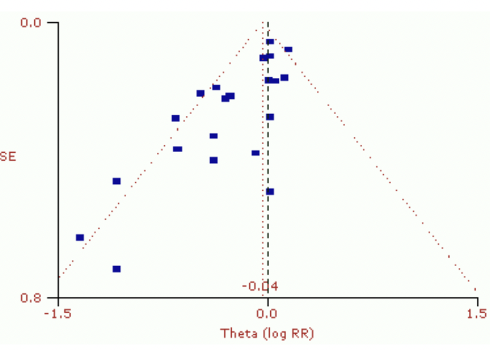
Correlation could suggest “missing” studies.
8.1.1.5 Inter-ocular trauma test
“Do the results hit you between the eyes?”
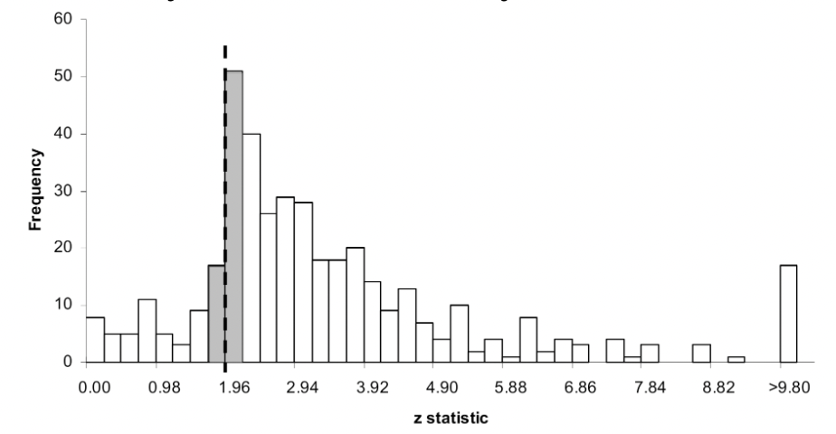
(z = 1.96 is the threshold for statistical significance)
8.1.1.6 Type “M” errors
Despite the fact that large sample sizes are needed to detect what seem like “medium” effects, we see lots of studies will small sample sizes reporting significant effects.
Also, significant effects from small sample sizes are always large.
A likely culprit: the combination of publication bias and low power.
Low power: a typical consequence of…
Small sample sizes
Small effects
Noisy or imprecise measurements
Noisy or imprecise manipulations
A nasty consequence of publication bias combined with low power: published effect sizes are biased upward. The lower the power, the greater the bias.
A diagram of low power:
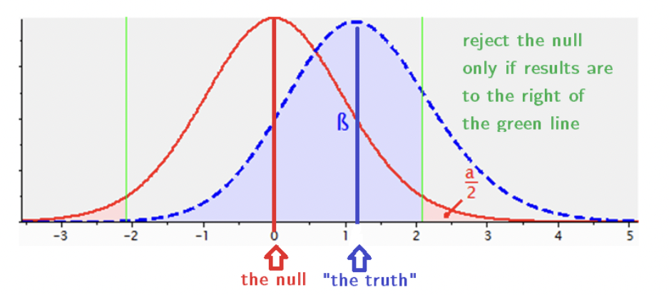
Notice: “the truth” is NOT in the “reject the null” region. So when power is low, “the truth” is not statistically significant!
8.1.1.7 Visually, using confidence intervals
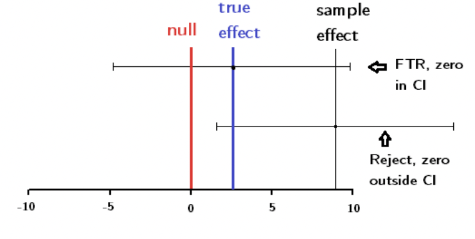
Low power => wide CIs
Here, wide CI centered on true effect => not significant
For CI to exclude zero, sample effect must greatly overestimate true effect
8.1.1.8 Visually, using sampling distributions
Below: Sampling distribution of the Cohen’s d statistic (standardized diff. in means). Simulated so that power = 0.27 and population d = 0.5.
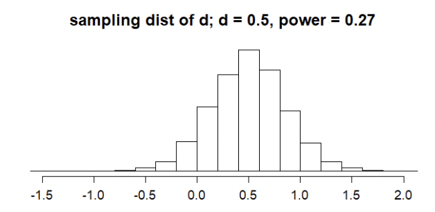
Below: same thing, but after removing all d statistics that do not achieve statistical significance.
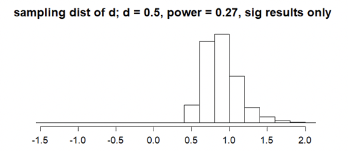
Upshot: conditioning an unbiased estimator on p < 0.05 creates a biased estimator. The lower the power, the greater the bias.
8.1.1.9 The extreme example
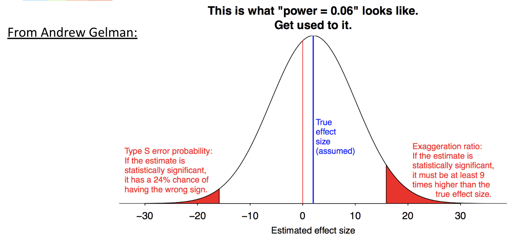
8.1.1.10 Can low power be assessed empirically?
“Post-hoc” power analysis describes performing a power analysis on a data set after having conducted a significance test.
Sometimes researchers will get a non-significant result, and suspect low power is the reason. So, they do a power analysis using the effect size and standard error from the data, and find low power.
THIS IS INVALID! If p > 0.05, then post-hoc power must be lower than 50%.
So, “non-significant” results will always be identified as “low power”, post-hoc.
8.1.1.11 Estimating power meta-analytically: R-Index
R-Index: calculate observed power for each study. Compare average power to proportion of studies showing significance. Lower observed power could suggest missing studies.
e.g. observed power = 0.6, 10 / 10 results significant; 6 / 10 expected if power = 0.6.
If a collection of studies all show significant results, then average observed power must be greater than 50%. But, it might not be much greater.
8.1.1.12 Should we throw away non-significant results?
There are statistical problems that arise when only reporting significant results.
There is also a scientific problem: are non-significant results really uninteresting?
If the question is worth asking (“do I have evidence for this substantive hypothesis?”), isn’t the answer worth knowing?
The practice of throwing away non-significant results goes hand in hand with a false interpretation of NHST results: that non-significance implies “no effect”.
p-value < 0.05 is commonly interpreted as evidence for an effect.
But, p-value > 0.05 should not necessarily be interpreted as evidence for no effect.
8.1.1.13 “There was no effect (p>0.05)”
Example: suppose three studies (A, B, and C) all aimed to estimate a standardized difference in means in terms of Cohen’s d:
\[ d= \frac{\bar{x}_1 - \bar{x}_2}{s_p} \]
Suppose that for each study, a p-value is also computed, testing against the null of \(H_0: \mu_1-\mu_2 = 0\)
A 95% CI for d is also constructed.
In this example, all CIs contain zero, so all p-values exceed 0.05. All three tests are consistent with “no effect”.
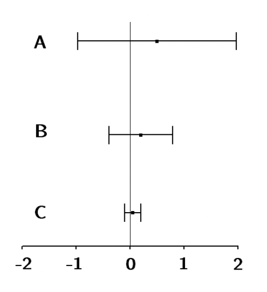
However, the first CI is also consistent with a very large effect, which could be positive or negative. The third CI is consistent with no effect or a very small effect .
But - the p-values are the same! In all three cases, p = 0.51.
8.1.1.14 Published example: knee surgery study
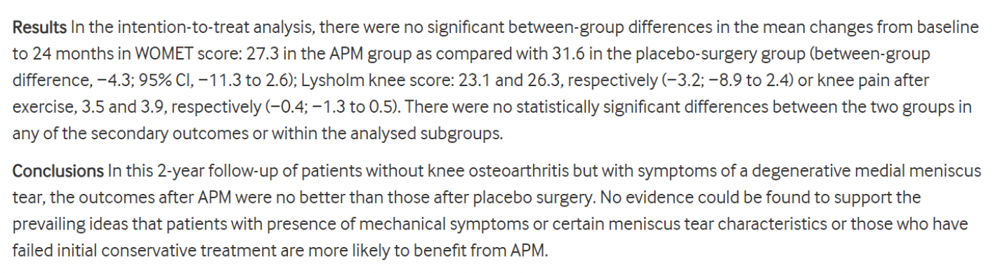
The article “Arthroscopic partial meniscectomy versus placebo surgery for a degenerative meniscus tear: a 2-year follow-up of the randomized controlled trial” assesses the effectiveness of a surgical procedure for treating a degenerative knee tear relative to a sham “placebo” surgery (!!!). https://ard.bmj.com/content/77/2/188
The article finds a non-significant difference between treatment and placebo, and interprets this as the treatment being “no better” than placebo. Author conclude there is “no evidence” in favor of the treatment.
However, later in the paper the authors make a much stronger argument: that the 95% CI for the difference in means is fully below the minimum clinically meaningful difference, which they established a priori:
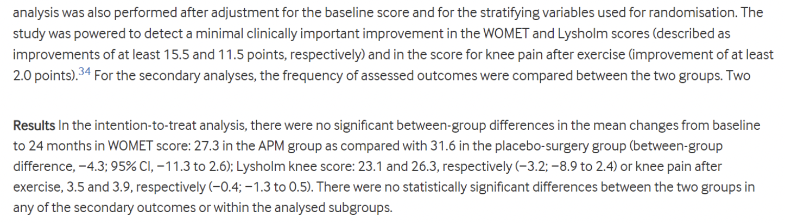
Note the sharp difference between these arguments:
“Surgery was not effective because the difference between surgery and placebo was not statistically significant.”
“Surgery was not effective because the 95% CI for the difference between surgery and placebo fell entirely below the minimum clinically significant difference.
The first argument says “the estimated difference is no bigger than what would be expected by chance.” The second says “the largest plausible value for the difference is still too small to be interesting.”
8.1.2 Debates over statistical signficance
The use of statistical significance has always been controversial.
Three recent high profile papers have argued for some different viewpoints on statistical significance.
8.1.2.1 “Redefine statistical significance”
“Redefine Statistical Significance” (2017) calls for lowering the standard threshold for significance to p < 0.005
The argument: p < 0.05 is too easy to obtain from noise.
This paper proposes labeling p-values between 0.005 and 0.05 as “suggestive”, and p-values less than 0.005 as “significant”.
An exception: if the procedure is pre-registered, p < 0.05 can be labeled “significant”. So a distinction is drawn between exploratory and confirmatory data analyses.
8.1.2.2 “Justify your alpha”
“Justify Your Alpha” (2017), written in response, calls for allowing flexibility in alpha levels rather than defaulting to p < 0.05.
The argument: alpha (a.k.a. the significance level) sets a trade-off between Type I errors and Type II errors.
Smaller values of alpha lower Type I error rates but increase Type II error rates, and vice versa.
The optimal trade-off will be different for different research fields. FDA drug trials should not use the same trade-off as exploratory research in brand new research fields.
8.1.2.3 “Abandon statistical significance”
“Abandon Statistical Significance” (2017) calls for the elimination of thresholds entirely.
The argument: “significance” is just a way of taking continuous phenomena (e.g. differences in means, probabilities, correlations) and forcing them into one of two categories.
Instead, why not report the evidence on its own terms? No need to force it into an artificial and simplistic “either / or” distinction.
8.1.3 Proposed reforms
8.1.3.1 Some proposals for doing things differently
Pre-registration and registered reports: data analysis plans are stated ahead of time. This removes flexibility in analysis.
With registered reports, data analysis plans are peer reviewed, and papers can be accepted for publication before results are known. This removes publication bias.
Rewarding “open” practices.
The Association for Psychological Science now does this using badges:
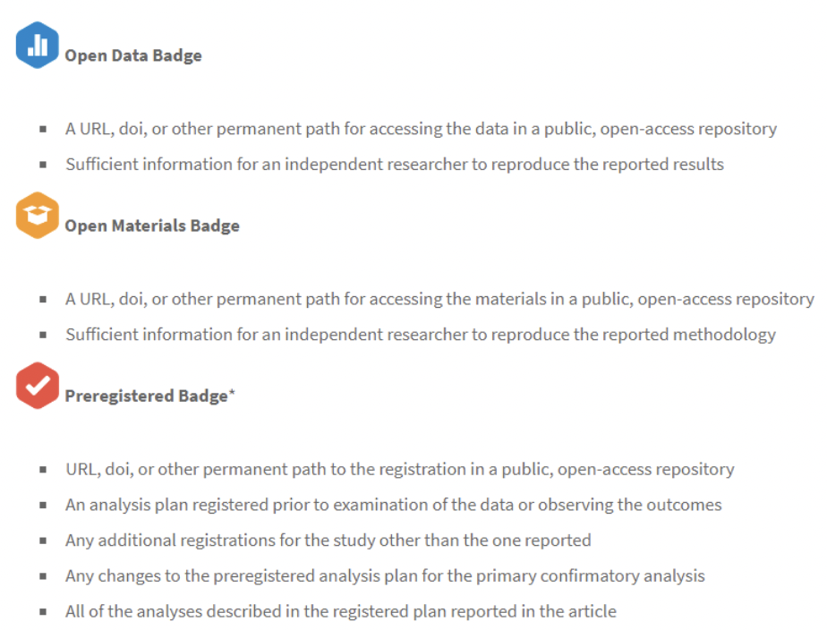
“Equivalence testing”: an alternative to “accepting” a null that has not been rejected.
Idea: establish a minimum effect size of interest (e.g. “we’re not interested in this drug if it doesn’t reduce blood pressure by at least…”)
Make the null of the equivalence test be that the true effect is smaller than the minimum effect size of interest.
If the null is rejected, then observed results are “equivalent” to the null insofar as they are too small to be interesting.
Visualization of equivalence testing, using confidence intervals:
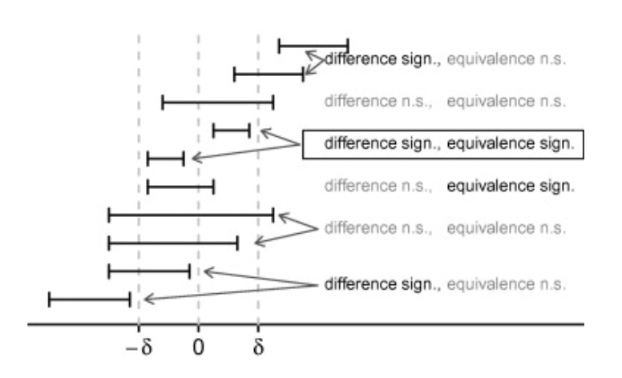
Note that results can be both “not significantly different” and “not significantly equivalent”.
They can also be both “significantly equivalent” and “significantly different”!
“The New Statistics” proposes that we emphasize confidence intervals over p-values, as they are easier to understand and less noisy (i.e. they don’t change as much across repeated samples)
The Peer Reviewers’ Openness Initiative calls on reviewers to require open data, open methods, and code that will reproduce analyses, so that reviewers can double check the analyses and results.
The GRIM test, SPRITE test, and Statcheck are algorithms that check for internal consistency of reported results. They provide a “sanity check” that can detect potentially p-hacked data analyses.
8.1.3.2 Some closing remarks
As stated at the outset, there is great controversy over the appropriate use of statistical methods!
Some wise words from participants in this controversy:
“We often hear it’s too easy to obtain small p-values, yet replication attempts find it difficult to get small p-values with preregistered results. This shows the problem isn’t p-values but failing to adjust them for cherry picking, multiple testing, post- data subgroups and other biasing selection effects.”
-Deborah Mayo, “Don’t throw out the error control baby with the bad statistics bathwater”
“It seems to me that statistics is often sold as a sort of alchemy that transmutes randomness into certainty, an”uncertainty laundering” that begins with data and concludes with success as measured by statistical significance … the solution is not to reform p-values or to replace them with some other statistical summary or threshold, but rather to move toward a greater acceptance of uncertainty and embracing of variation.
Andrew Gelman, “The problems with p-values are not just p-values”